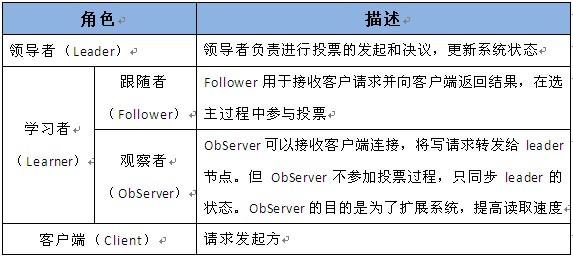

19.1. zookeeper¶
zookeeper(简称zk) 是apache hadoop的一个子项目， 它主要用来解决分布式应用中经常遇到的一些数据管理问题，比如统一命名服务、状态同步服务、集群管理、 分布式应用配置项的管理等。
19.1.1. zookeeper能提供什么¶
简单的说zookeeper = 文件系统 + 通知机制 。
文件系统说的是zookeeper存储数据以linux文件系统类似的方式组织。 通知机制说的是客户端监听它说关系的znode节点，当节点变化，zk会通知客户端。
zk中的节点不是目录或者文件， 而叫znode, znode可以看做目录使用和文件使用。 zk的znode按照是否持久，是否有序分为如下4中类型。
- 持久节点
- 持久顺序节点
- 临时节点
- 临时顺序节点
19.1.2. zookeeper的基本概念¶
zk的角色主要有一下三类角色,如下表所示：
19.1.3. zookeeper可以做什么¶
19.1.3.1. 命名服务¶
命名服务通过指定名字来获取资源和服务的地址，简单的说zk做命名服务就是使用路径作为名字， 路径对应的数据作为具体的实体。 比如阿里巴巴的分布式服务框架dubbo就是使用zk作为命名服务， 服务提供者在启动的时候，向zk的指定节点/dubbo/${servername}/providers目录中写入自己的url地址，这个操作就是服务的发布。 服务的消费者启动的时候，订阅/dubbo/${servicename}/provides的目录下的提供者url地址，并向/dubbo/${servername}/consumers目录写入自己的url地址。
19.1.3.2. 配置管理¶
程序总是需要配置文件的， 如果程序部署在多个服务器上面，逐一修改会是非常痛苦的事情，使用zk可以在某个znode节点创建一个对应程序的配置目录，目录下放置这个程序的 所有配置，然后所有服务器节点对这个目录的节点和对应配置节点进行监听，这样每个程序都是可以收到zk的通知消息，及时自身节点的配置。
19.1.3.3. 集群管理¶
集群中主要2个事情需要zk来做， 服务器节点的退出和上线（上下线感知）， 选举集群的master节点。
上下线感知： 所有的服务器节点约定一个父目录，并在其下创建**临时目录**，然后每个节点都会监听这个父目录的**子节点个数**变化消息， 一旦机器挂了，zk上对应的数据就会删除（临时节点在断开连接时候自动删除节点） 这样父目录的子节点个数会变动， 监听此事件的所有服务器都会受到zk的通知。
选举master: 机器的master选举需要考虑的因素很多， 这里说一个相对简单的选举master方式， 所有服务器节点在一个父目录下创建临时的顺序编号的目录节点，每次选举就去编号最小的机器作为master就好。
19.1.3.4. 分布式锁¶
分布式中主要有3种锁，读锁、写锁、顺序锁。
读锁： 使用zk的临时的顺序编号就可以了， 每个client过来都会在特定目录下创建一个临时的节点，断开自动删除自身节点。 写锁： 使用zk的临时的节点就可以了， client过来会在尝试在特定的目录下创建一个临时节点，如果能成功就可以继续写操作， 如果失败需要监听此节点的删除事件，如果收到通知就继续前面操作。 顺序锁： 使用zk的临时顺序节点就可以了， client过来会在特定的目录下面创建一个临时顺序节点，zk来控制最小的顺序获得锁，一直循环下去。
19.1.3.5. 队列管理¶
这里有2种队列， 一个是同步队列， 一个是fifo队列。 同步队列： 所有client约定一个目录下，都创建一个临时的顺序节点，都监听父目录， 如果节点个数达到对应的个数的时候， 就说明所有节点到达了， 就可以继续处理接下里的同步工作了。 fifo队列： 这个基本上面的顺序锁差不多， 需要入列有编号， 出列有编号。 client过来的时候会在特定目录下创建一个临时的编号节点， 因为zk的节点编号从小到大， 只有zk每次选择节点的时候选择到具体的最小编号的就可以
保证fifo的。